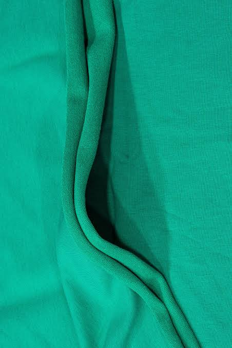
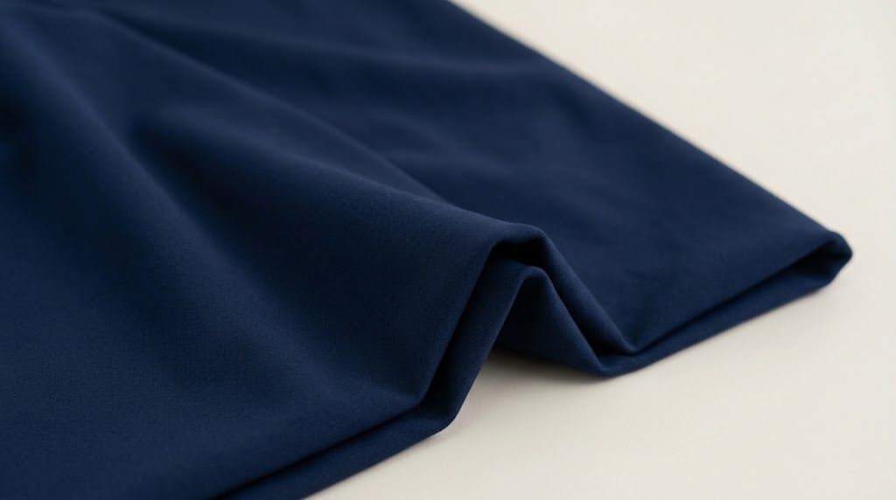
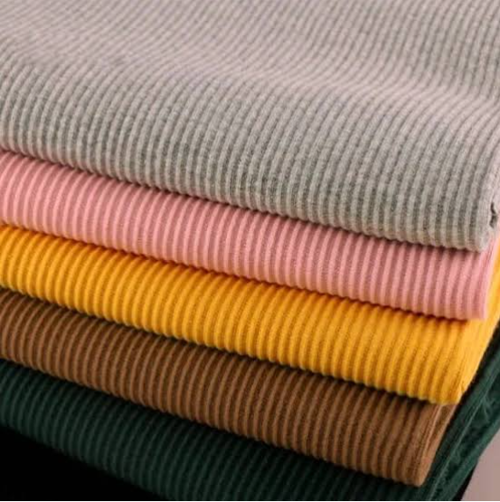

Tejidos de Punto de Alta Gama
Explora nuestras fichas técnicas, variedades de color y especificaciones por kilo o rollo.
 100% Algodón
100% Algodón
Jersey Algodón Peinado 20/1
Tejido grueso e ideal para prendas estilo Oversize y Streetwear con excelente caída.
 100% Algodón
100% Algodón
Jersey Algodón Peinado 30/1
Tela ligera, fresca y tacto ultrasuave. La preferida para polos casuales y publicitarios.
 Térmico
Térmico
Franela Algodón Peinado 20/1
Interior perchado muy abrigador. Perfecta para la confección de Polerones Hoodie y Joggers.

Moda UrbanaFrench Terry Licra
Combinación de algodón con Spandex de gran elasticidad. Para joggers entallados y conjuntos.
 Poliester
Poliester
French Terry Rígido
Estructura firme sin elastano. Gran estabilidad dimensional para poleras de media estación.

DeportivoSuplex Alta Densidad
Tejido sintético de alta opacidad, cero transparencias y secado rápido para leggings y tops.
 Complemento
Complemento
Rib 2x1 Algodón
Tejido acanalado de alta elasticidad para cuellos, puños y pretinas de poleras pesadas.

ComplementoRib 1x1 Algodón Peinado
Acanalado fino de tacto suave para cuellos de polos jersey y terminaciones delicadas.